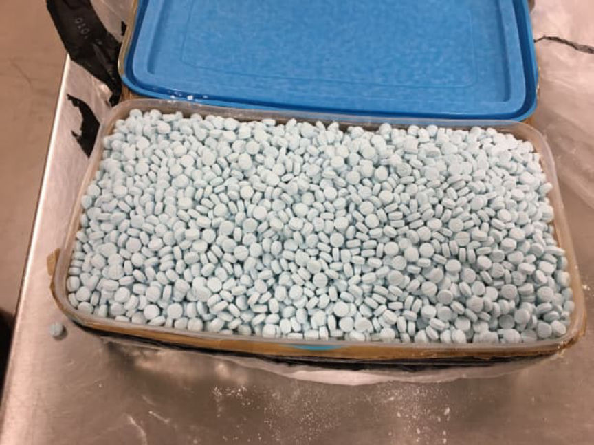
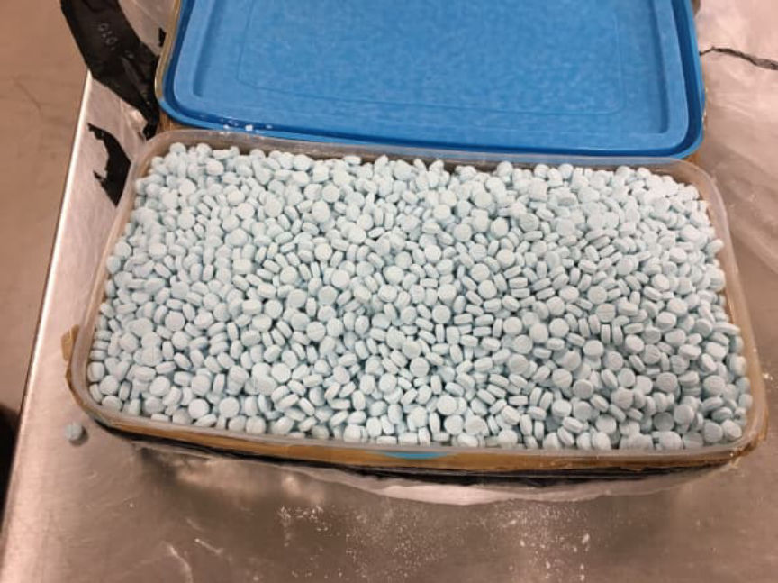

Jury Convicts XanaxKing2 of Selling Fentanyl Analogues
A jury convicted a California man of conspiring and manufacturing and distributing fentanyl pills through the darkweb.
Andrew Tablack, 29, of Beverly Hills, California was found guilty following a six-day trial presided over by U.S. District Judge Michael A. Shipp at the Trenton federal court. The jury found Tablack guilty of one count of manufacturing, supplying, and possessing with intent to manufacture and distribute cyclopropyl fentanyl pills. He was also found guilty of one count of conspiracy to Manufacture and Distribute Fentanyl pills.

Tablack’s conviction was based on evidence acquired during investigations conducted by the Organized Crime Drug Enforcement Task Force (OCDETF). Investigators reportedly established that Tablack and his accomplice, Stephan Durham, 43, of Altadena, California, operated a fentanyl pill production facility from as early as March 2017 through December 2017.
The duo manufactured hundreds of thousands of fentanyl pills and distributed them throughout the US via the darkweb under the “XanaxKing2” vendor name. The vendor sold approximately 400,000 of the pills every month.
The investigations that led to Tablack’s conviction began as an investigation into the distribution of fentanyl in New Jersey launched by the DEA. The DEA investigators executed a search warrant on a residence in Monmouth County, New Jersey, and seized large quantities of a wide variety of drugs including approximately 300,000 cyclopropyl fentanyl pills.

The investigators later found out the fentanyl pills had allegedly been shipped to the owner of the residence by Tablack. The investigators intercepted several packages mailed to Monmouth County by Tablack in September 2017. After opening the packages, investigators found a total of 226,520 cyclopropyl fentanyl pills with a total weight of approximately 20 kilograms.
Further investigations revealed that Tablack had been running a massive pill production facility in California. The investigators acquired shipping records that showed that Tablack had purchased at least nine pill press machines that he had shipped to an industrial property in California. The industrial property had been leased by a company run by Tablack’s accomplice, Durham.
The investigators also found out that Tablack had been purchasing large quantities of fentanyl from a lab in China. The lab shipped the fentanyl disguised as food and beauty products packages to properties controlled by Tablack and Durham. The investigators allegedly intercepted several packages sent from Asia to the properties. The interceptions resulted in the seizure of undisclosed quantities of fentanyl.
[img=] [/img]
Tablack and Durham were arrested on December 20, 2017. They were each charged with one count of conspiracy to manufacture and distribute fentanyl analogue pills. Tablack was also charged with one count of manufacturing and distributing fentanyl analogue pills.
The jury found Tablack guilty of the two charges leveled against him on July 14, 2021. Each charge carries a maximum of 20 years in prison and a $1 million fine. Tablack’s sentencing will take place on December 6, 2021.
Indictment (pdf)
DNL note: law enforcement seized dozens of different cryptocurrencies from Tablack but also a Rolls Royce Wraith which seems unusual.
Approximately 106,260.01646951 Waves seized on or about December 20, 2017; Approximately 275,000 Syscoin seized on or about December 20, 2017; Approximately 159,211.67613520 Shift seized on or about December 20, 2017; Approximately 95,016.989 Waves seized on or about December 20, 2017; Approximately 25,165.16586896 Ark seized on or about December 20, 2017; Approximately 7,268.81134075 OmiseGo seized on or about December 20, 2017; Approximately 17.48646464 Bitcoin seized on or about March 19, 2018; Approximately $5,400.00 in United States currency seized on or about December 20, 2017; One 2015 Rolls-Royce Wraith Sedan One Apple iPhone 7 Plus, 32GB capacity, seized on or about December 20, 2017; One Apple iPhone 7, seized on or about December 20, 2017; One Apple iPhone 6 Plus (broken), seized on or about December 20, 2017; One Apple iPhone 6 Plus, seized on or about December 20, 2017; One Samsung Cellular Phone, seized on or about December 20, 2017; One Dell Inspiron Laptop, seized on or about December 20, 2017; One Ledger Blue Security Device, seized on or about December 20, 2017; Two Ledger Nano S Digital Currency Hardware Wallets, seized on or about December 20, 2017; One Apple iPhone SE, seized on or about December 20, 2017; One Apple iPad Pro, seized on or about December 20, 2017;
Also, comments should be returning very soon. Finally have a working system.
Andrew Tablack, 29, of Beverly Hills, California was found guilty following a six-day trial presided over by U.S. District Judge Michael A. Shipp at the Trenton federal court. The jury found Tablack guilty of one count of manufacturing, supplying, and possessing with intent to manufacture and distribute cyclopropyl fentanyl pills. He was also found guilty of one count of conspiracy to Manufacture and Distribute Fentanyl pills.
Tablack’s conviction was based on evidence acquired during investigations conducted by the Organized Crime Drug Enforcement Task Force (OCDETF). Investigators reportedly established that Tablack and his accomplice, Stephan Durham, 43, of Altadena, California, operated a fentanyl pill production facility from as early as March 2017 through December 2017.
The duo manufactured hundreds of thousands of fentanyl pills and distributed them throughout the US via the darkweb under the “XanaxKing2” vendor name. The vendor sold approximately 400,000 of the pills every month.
The investigations that led to Tablack’s conviction began as an investigation into the distribution of fentanyl in New Jersey launched by the DEA. The DEA investigators executed a search warrant on a residence in Monmouth County, New Jersey, and seized large quantities of a wide variety of drugs including approximately 300,000 cyclopropyl fentanyl pills.

The investigators later found out the fentanyl pills had allegedly been shipped to the owner of the residence by Tablack. The investigators intercepted several packages mailed to Monmouth County by Tablack in September 2017. After opening the packages, investigators found a total of 226,520 cyclopropyl fentanyl pills with a total weight of approximately 20 kilograms.
Further investigations revealed that Tablack had been running a massive pill production facility in California. The investigators acquired shipping records that showed that Tablack had purchased at least nine pill press machines that he had shipped to an industrial property in California. The industrial property had been leased by a company run by Tablack’s accomplice, Durham.
The investigators also found out that Tablack had been purchasing large quantities of fentanyl from a lab in China. The lab shipped the fentanyl disguised as food and beauty products packages to properties controlled by Tablack and Durham. The investigators allegedly intercepted several packages sent from Asia to the properties. The interceptions resulted in the seizure of undisclosed quantities of fentanyl.
[img=] [/img]
Tablack and Durham were arrested on December 20, 2017. They were each charged with one count of conspiracy to manufacture and distribute fentanyl analogue pills. Tablack was also charged with one count of manufacturing and distributing fentanyl analogue pills.
The jury found Tablack guilty of the two charges leveled against him on July 14, 2021. Each charge carries a maximum of 20 years in prison and a $1 million fine. Tablack’s sentencing will take place on December 6, 2021.
Indictment (pdf)
DNL note: law enforcement seized dozens of different cryptocurrencies from Tablack but also a Rolls Royce Wraith which seems unusual.
Also, comments should be returning very soon. Finally have a working system.